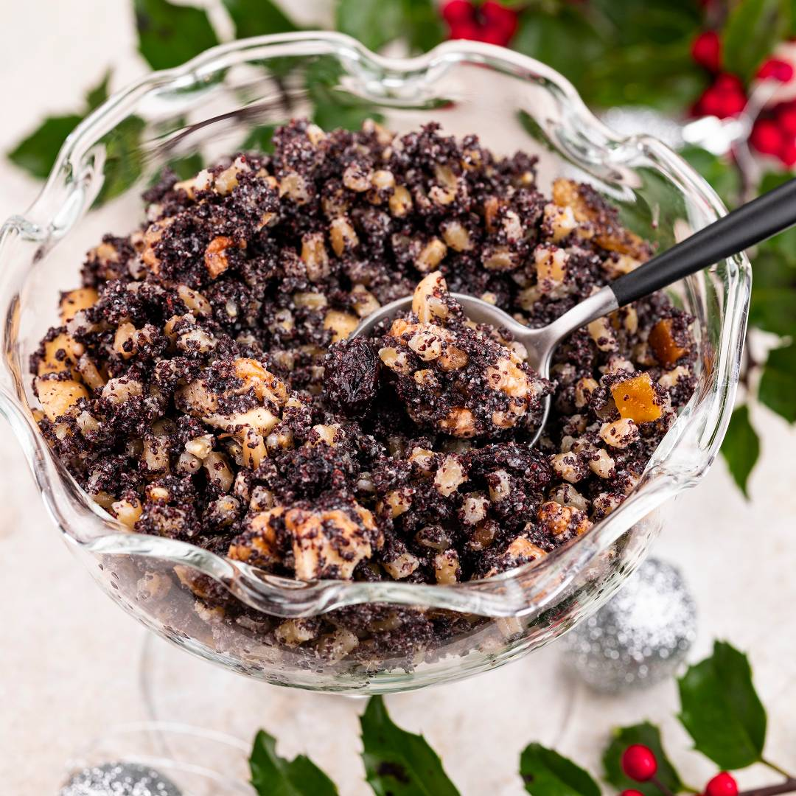
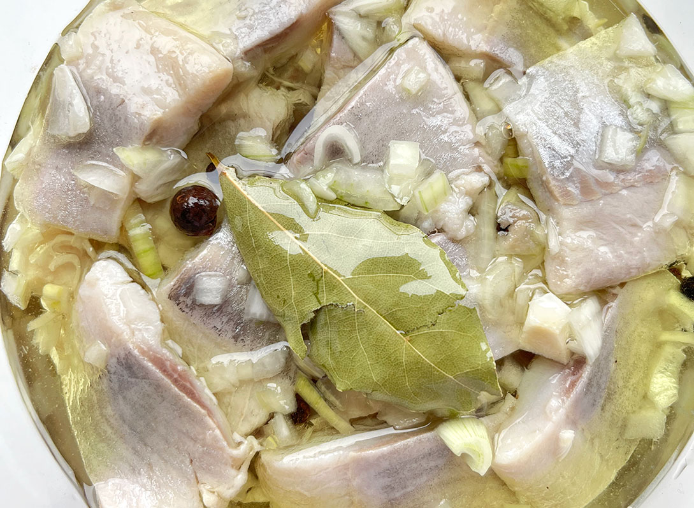

Potrawy i Tradycje
W Polsce tradycje potraw świątecznych są głęboko zakorzenione w
kulturze i zwyczajach, odzwierciedlając zarówno religijne, jak i
regionalne dziedzictwo. Najbardziej znane święta, podczas których
szczególnie celebruje się tradycyjne jedzenie, to Boże Narodzenie. Podczas tego swieta wystawianych jest 12 rożych bez mięsnych potraw wyrozniamy m.in;
Barszcz z uszkami
zupa z buraków podawana z małymi pierożkami z grzybami.
Pierogi z kapusta i grzybami
jedno z najpopularniejszych dań, obowiązkowe na wielu stołach.
Gołąbki z kaszą i grzybami.
potrawa wigilijna, w której liście kapusty zawijają farsz z kaszy i grzybów, gotowane na delikatnym bulionie.
Kutia
słodka potrawa z maku, miodu, orzechów i pszenicy

Smażony karp
ryba symbolizująca dostatek
Kluski z makiem
słodkie danie, w którym ugotowane kluski mieszane są z mielonym makiem, cukrem, masłem i rodzynkami, symbolizujące radość i obfitość.

Kapusta z grochem lub z grzybami.
postna potrawa, w której kapusta kiszona lub świeża łączy się z grochem lub grzybami, tworząc aromatyczne i sycące danie.
ryba po grecku
panierowana i smażona ryba, najczęściej dorsz lub karp, jest zalewana duszoną mieszanką warzyw w sosie pomidorowym, tworząc aromatyczną potrawę
sałatka jarzynowa
klasyczne polskie danie, w którym gotowane warzywa, takie jak ziemniaki, marchew, groszek, oraz jajka, mieszają się z majonezem, tworząc smaczną i kremową sałatkę.
kompot z suszonych owoców
napój na bazie gotowanych suszonych owoców, takich jak śliwki, jabłka i gruszki, który jest słodki, aromatyczny i często podawany na Wigilii.
pierniki
aromatyczne ciastka z mąki, miodu, przypraw korzennych i cukru, pieczone na Boże Narodzenie, często dekorowane lukrem.
śledzie
potrawa, w której śledzie, najczęściej marynowane w oleju, occie lub śmietanie, podawane są z cebulą lub innymi dodatkami, stanowiąc tradycyjny element wigilijnego stołu.

Bezpieczeństwo podczas ferii zimowych
1. Bezpieczne zabawy na śniegu
Nie zjeżdżaj na nartach lub snowboardzie w miejscach, które nie są do tego przeznaczone.
Używaj kasku ochronnego podczas jazdy na nartach i snowboardzie.
Upewnij się, że sprzęt narciarski jest dobrze dopasowany i w dobrym stanie technicznym.
2. Ostrożność w górach
Nie wychodź na nieoznakowane szlaki turystyczne.
Zawsze sprawdzaj prognozę pogody przed wyjściem w góry.
Informuj bliskich o planowanej trasie i czasie powrotu.
3. Bezpieczne kąpiele
Nie wchodź do wody po spożyciu alkoholu.
Unikaj kąpieli w miejscach nieznanych lub bez nadzoru ratowników.
Przestrzegaj zasad bezpieczeństwa na lodowiskach, szczególnie podczas wchodzenia na lód.
4. Wskazówki dotyczące zdrowia
Ubieraj się odpowiednio do pogody, aby uniknąć wychłodzenia.
Regularnie pij wodę, aby zapobiec odwodnieniu, nawet w zimie.
Jeśli jesteś chory, zrezygnuj z aktywności fizycznej, aby uniknąć pogorszenia stanu zdrowia.
5. Bezpieczeństwo na drodze
Używaj odpowiednich opon zimowych, aby uniknąć poślizgów na zaśnieżonych drogach.
Przygotuj samochód na zimowe warunki, sprawdzając stan techniczny pojazdu.
Jeździj ostrożnie, zachowując większą odległość od innych pojazdów.
Nie używaj telefonu komórkowego podczas jazdy, aby uniknąć rozproszenia uwagi.
6. Zachowanie ostrożności przy organizowaniu wyjazdów
Przed wyjazdem sprawdź, czy miejsce docelowe posiada odpowiednie warunki do uprawiania sportów zimowych.
Upewnij się, że masz wykupione odpowiednie ubezpieczenie podróżne.
Przygotuj plan awaryjny i lista kontaktów w razie problemów.
Zabierz ze sobą niezbędny sprzęt oraz zapas odzieży w razie zmiany pogody.